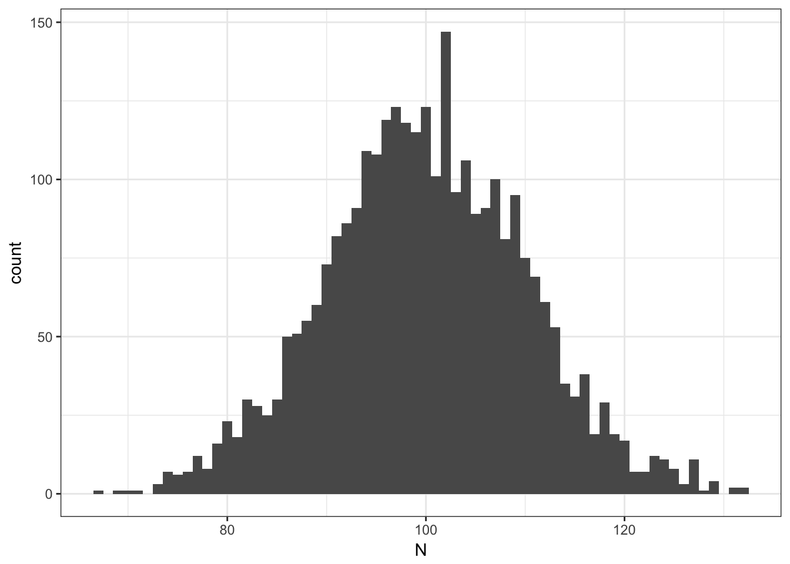
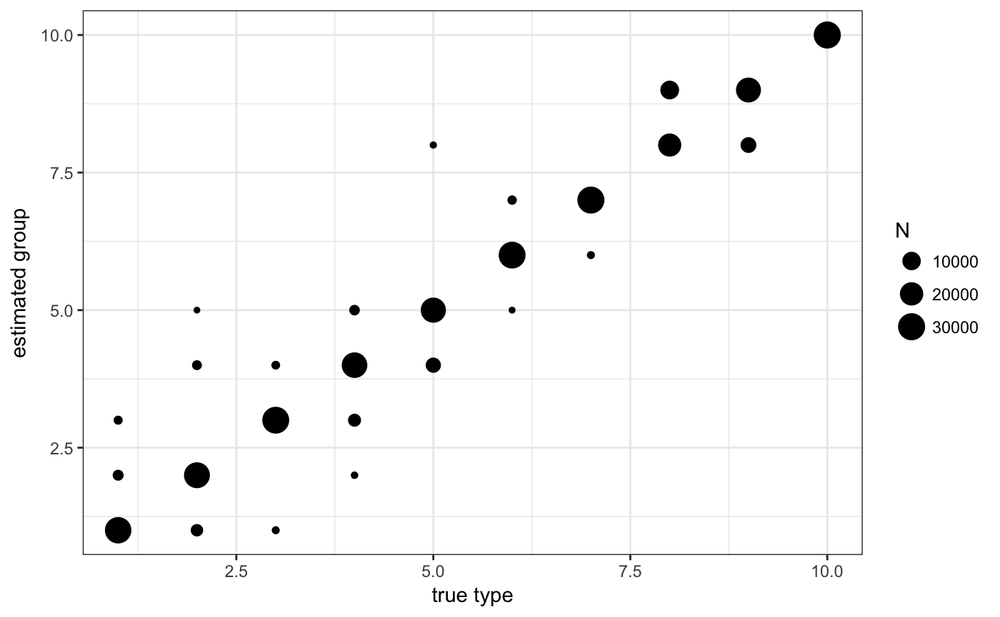
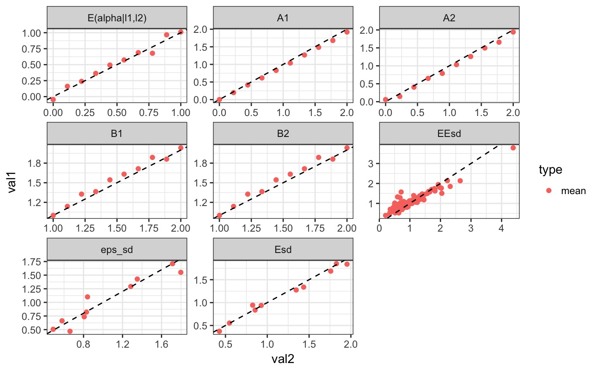
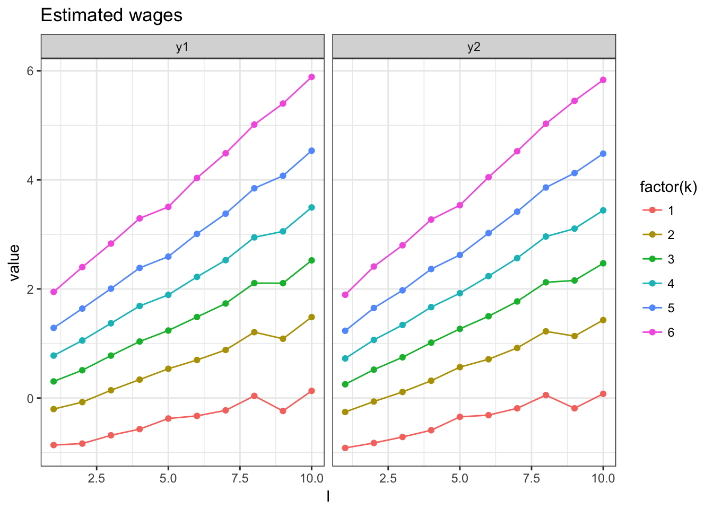

Simulating and estimating teh interacted model
require(rblm)
require(knitr)
require(kableExtra)
options(knitr.table.format = "html") Simulating a data set
The interacted model has the following equations:
\[ y_{it} = a_t(k_{it}) + b_t(k_{it}) \cdot \alpha_i + \epsilon_{it}\] where in the model we define the average worker quality conditional on a firm type:
\[ \text{Em} = E[ \alpha_i |k,t=1 ] \]
and the average wroker quality conditional on a job change: \[ \text{EEm} = E[ \alpha_i |k_1{=}k,k_2{=}k',m{=}1 ] \]
set.seed(324313)
model = m2.mini.new(10,serial = F,fixb=T)
# we set the parameters to something simple
model$A1 = seq(0,2,l=model$nf) # setting increasing intercepts
model$B1 = seq(1,2,l=model$nf) # adding complementarity (increasing interactions)
model$Em = seq(0,1,l=model$nf) # adding sorting (mean type of workers is increasing in k)
# we make the model stationary (same in both periods)
model$A2 = model$A1
model$B2 = model$B1
# setting the number of movers and stayers
model$Ns = array(300000/model$nf,model$nf)
model$Nm = 10*toeplitz(ceiling(seq(100,10,l=model$nf)))
# creating a simulated data set
ad = m2.mini.simulate(model)## INFO [2018-09-24 15:52:42] computing var decomposition with ns=817440 nm=182550
## cor_kl cov_kl var_k var_l rsq
## 1 0.2353 0.1394 0.7423 0.1183 0.7891# plot firm size distribution
ggplot(ad$sdata[,.N,f1],aes(x=N)) + geom_histogram(binwidth=1) + theme_bw()
Clustering firms
We start by extracting the measures that will be used to cluster
ms = grouping.getMeasures(ad,"ecdf",Nw=20,y_var = "y1")## INFO [2018-09-24 15:52:53] processing 3000 firms
## INFO [2018-09-24 15:52:53] computing measures...
## INFO [2018-09-24 15:52:53] computing weights...# then we group we choose k=10
grps = grouping.classify.once(ms,k = 10,nstart = 1000,iter.max = 200,step=250)## INFO [2018-09-24 15:52:53] clustering T=101.015687, Nw=20 , measure=ecdf
## INFO [2018-09-24 15:52:53] running weigthed kmeans step=250 total=1000
## INFO [2018-09-24 15:52:53] nobs=3000 nmeasures=20
## INFO [2018-09-24 15:52:55] [25%] tot=358.144483 best=358.144483 <<<<
## INFO [2018-09-24 15:52:56] [50%] tot=358.144483 best=358.144483
## INFO [2018-09-24 15:52:58] [75%] tot=358.144483 best=358.144483
## INFO [2018-09-24 15:52:59] [100%] tot=358.144483 best=358.144483
## INFO [2018-09-24 15:52:59] k=10 WSS=358.144483 nstart=1000 nfrims=3000# finally we append the results to adata
ad = grouping.append(ad,grps$best_cluster,drop=T)
# we can also check the classification
ggplot(ad$sdata[,.N,list(j1,j1true)],aes(x=j1true,y=j1,size=N)) + geom_point() + theme_bw() +
scale_x_continuous("true type") + scale_y_continuous("estimated group")
In the previous command we tell rblm that we want to use the firm specific empirical measure “ecdf” with 20 points of supports and that the dependent variable is “y1”. The firm identifier should be “f1”.
Estimating the model
This is a relatively old code, we will be pushing an update extremely soon!
res = m2.mini.estimate(ad$jdata,ad$sdata,model0 = model,method = "fixb")## INFO [2018-09-24 15:53:01] computing var decomposition with ns=817439 nm=182564
## cor_kl cov_kl var_k var_l rsq
## 1 0.2445 0.1416 0.7463 0.1122 0.7914
## cor with true model:0.954619We can show the decompositions next to each other:
kable(rbind(model$vdec$stats,res$vdec$stats),digits = 4) %>%
kable_styling(bootstrap_options = c("striped", "bordered","condensed"), full_width = F)| cor_kl | cov_kl | var_k | var_l | rsq |
|---|---|---|---|---|
| 0.2445 | 0.1416 | 0.7463 | 0.1122 | 0.7914 |
And we can plot the resulting wage, next to the true ones
m2.mini.plotw(res) + ggtitle("Estimated wages")
m2.mini.plotw(model) + ggtitle("Model wages")
Estimating using quasi-likelihood
This is a new estimator we have been working on.
We start by extracting all necesserary moments for off-line estimation:
mstats = ad$jdata[,list(m1=mean(y1),sd1=sd(y1),
m2=mean(y2),sd2=sd(y2),
v12 = cov(y1,y2),.N),list(j1,j2)]
cstats = ad$sdata[,list(m1=mean(y1),sd1=sd(y1),
m2=mean(y2),sd2=sd(y2),
v12 = cov(y1,y2),.N),list(j1)]Then we estimate using the quasi-likelihood estimator:
res2 = m2.minirc.estimate(cstats,mstats,method = 2)here is the variance decomposition:
dd = rbind(model$vdec$stats,res$vdec$stats,res2$vdec$stats)
kable(dd,digits = 4) %>%
kable_styling(bootstrap_options = c("striped", "bordered","condensed"), full_width = F)| cor_kl | cov_kl | var_k | var_l | rsq |
|---|---|---|---|---|
| 0.2445 | 0.1416 | 0.7463 | 0.1122 | 0.7914 |
| 0.2399 | 0.1424 | 0.7382 | 0.1194 | 0.7742 |